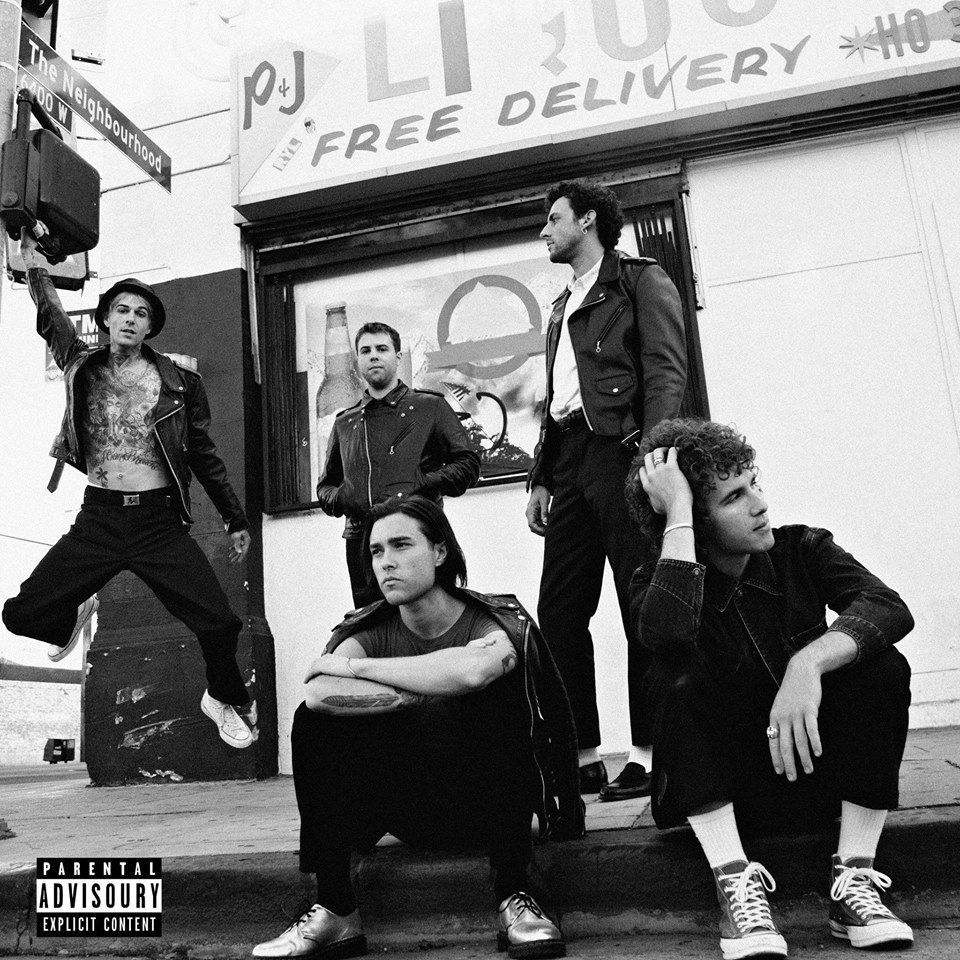

The Neighbourhood
The Neighbourhood (às vezes representado como THE NBHD) é uma banda americana de indie rock formada em Newbury Park, Califórnia em 2011. A banda é composta pelo vocalista Jesse Rutherford, os guitarristas Jeremy Freedman e Zach Abels, o baixista Mikey Margott e o baterista Brandon Fried.
Músicas:
- Sweater Weather;
- Softcore;
- Daddy issues;
- Afraid,
- The beach,
- Cry baby.